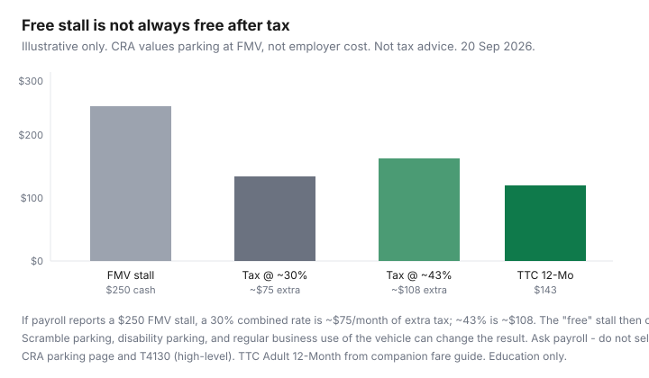

Transportation · Canada
Is employer parking a taxable benefit in Canada? A high-level saver’s guide
Employees treat a “free” workplace stall as pure upside. The Canada Revenue Agency generally treats employer-provided parking as a taxable benefit equal to the fair market value of a similar spot nearby — not what the employer paid the landlord. A $250 downtown stall can show up on a T4 and cost you extra tax every month. Some administrative exceptions exist (including a documented scramble lot). This is a saver’s map of questions for payroll — not a filing position.
Parking on the household dashboard: car TCO and condo stalls. Toronto curb: residential permits. Transit substitutes: TTC capping and mixed-mode overview.
Key takeaways
- CRA’s general rule: parking you get or are reimbursed for is a taxable benefit when it is cheaper than FMV of a comparable spot. Employer cost is usually not the measure.
- Administrative relief can apply to scramble parking when there are no more than two spaces per three employees who want parking, spaces are unassigned, and the lot is offered to everyone who wants in. Assigned names on a wall are not a scramble.
- Regular business use of the vehicle (the job needs the car, not the commute) is a different fact pattern. Do not self-declare “I might drive to a client.”
- A $250 FMV stall at a 30% combined rate is about $75/month of extra tax; at ~43% about $108. That can exceed a $143 TTC Adult 12-Month.
- Ask payroll what is on the T4 and whether a transit subsidy or cash-in-lieu exists. This page will not prepare your return.
CRA’s general approach to employer-provided parking (high-level)
The CRA parking topic page (businesses / payroll / automobile) states that parking you provide or reimburse is generally a taxable benefit, including when the employee pays less than FMV. FMV is the price that could reasonably be charged in the open market for a similar spot in the surrounding area. The agency says that in most cases the cost to the employer is not a factor in that FMV, and that the employer must still determine FMV even when the lot is owned and “already paid for.”
If the benefit is taxable, the value is typically FMV minus what the employee pays, and GST/HST may be included in the benefit calculation. Employers often report taxable benefits on the T4 (box 14 and the appropriate code). CPP treatment is a payroll question. None of that is a reason to argue with a T4 on a forum — it is a reason to ask how the number was built.
When free parking may still create a taxable benefit
CRA examples on the parking page use owned and leased lots where parking is not available to the public, not scramble, and not required for business duties. In those sketches a $200 or $220 monthly FMV becomes the benefit even if the employer’s lease line is $180. Suburban “everyone parks free at the plaza” facts can look different from a reserved stall under a downtown tower. The label “free” in the offer letter is not the tax test.
| Pattern | Often looks like | Ask payroll |
|---|---|---|
| Named stall downtown | Taxable at FMV minus what you pay | What FMV did you use? Which comps? |
| Scramble lot | Possible administrative exception if the 2-per-3, unassigned, all-comers tests hold | How many spaces vs people who want parking, over the year? |
| Car required for duties | Different primary-beneficiary analysis when the job needs the vehicle regularly | Is this commute parking or tools-of-the-trade parking? |
| Disability parking | Often treated differently — confirm, do not assume | What policy applies to this stall? |
Questions to ask payroll and HR — not DIY tax advice
- Is my parking on the T4 this year? If yes, at what monthly FMV?
- How was FMV set — a nearby public garage, a broker opinion, last year’s number?
- Is the lot scramble under CRA’s current administrative conditions, or are spaces assigned?
- If I decline the stall, can I take a taxable or non-taxable transit amount instead?
- If I pay $80 toward a $250 stall, is $170 the benefit?
A licensed tax professional or the employer’s payroll software vendor answers edge cases (multiple work sites, hospital lots, hybrid two-day weeks). Employees who “just won’t report it” are not running a strategy.
Compare cashing out parking vs taking a transit subsidy
Worked sketch (labelled, not your bracket): FMV $250/month. Extra tax at a 30% combined rate ≈ $75; at ~43% ≈ $108. A TTC Adult 12-Month is $143 (companion fare guide). If you can cash out even $150 of parking budget toward a pass, the household may drop insurance kilometres and a stall. Employer-provided transit benefits have their own CRA rules — ask, do not assume a pass is “free” either. The saver’s move is to put both numbers on one page.

Downtown vs suburban worksite differences
Downtown FMV is easy to observe: monthly garage cards of a few hundred dollars. A plant in an industrial park where the public also parks at $0 can support a different FMV story — still the employer’s determination. Hybrid weeks do not automatically cut a reserved stall’s FMV in half. If you only need the lot two days, the expensive product may be the reserved card, not the car.
Documenting fair-market-value issues at a high level
If you believe payroll used a fantasy number, you still start with their comps, not a tweet. Nearby published monthly rates, a written offer to surrender the stall, and a record of scramble occupancy are the kinds of facts professionals use. Do not invent a $0 FMV because the employer owns the land. CRA’s examples already close that door.
When giving up the spot funds a transit pass instead
If the stall is taxable and you can do the job on GO or a city pass, dropping the stall can fund the pass and shrink auto insurance kilometres (shop that legally — deductible and mileage levers). Keep a few car-share days for the client site that is not on the subway. The win is not “beat CRA.” The win is a smaller transportation stack.
Not tax advice. Rules and administrative policies change. Read the CRA parking page and T4130 with your employer. This guide will not file a T4, a T1, or a dispute.
Sources & date stamps
- CRA, “Parking” (payroll / benefits / automobile) — general taxable-benefit rule, FMV, scramble-parking conditions (no more than 2 spaces per 3 employees who want parking; unassigned; offered to all). Reviewed 20 Sep 2026 via CRA/explainer summaries; confirm the live Canada.ca page.
- CRA T4130, Employers’ Guide – Taxable Benefits and Allowances — FMV definition; parking as a non-cash example.
- EY Tax Alert 2023 No. 01 — administrative scramble-parking conditions effective 1 Jan 2022 (high-level history).
- TTC Adult 12-Month $143 — companion fare guide. Illustrative tax rates are sketches, not your marginal rate.
Frequently asked questions
Is free workplace parking always taxable in Canada?
It is often a taxable benefit at fair market value, but CRA administrative exceptions (including a qualifying scramble lot) and some business-use facts can change that. Ask payroll. This is not a determination for your stall.
What is scramble parking?
At a high level, significantly fewer spaces than employees who want them, unassigned, first-come (CRA’s current write-up uses a 2-spaces-per-3-employees test and an all-comers offer). A painted name is not scramble.
Does the employer’s lease cost set the benefit?
Usually no. CRA says FMV is what a similar spot would cost in the area. A cheap landlord deal can still be a large employee benefit.
Should I take a transit subsidy instead?
Compare after-tax parking to a pass plus a few share days. Transit benefits have their own rules. Ask HR what can be cashed out. Not tax advice.
Where is this reported?
Taxable parking is typically an employer T4 reporting issue. Do not omit a benefit you know is there. Talk to payroll or a tax professional if the number looks wrong.